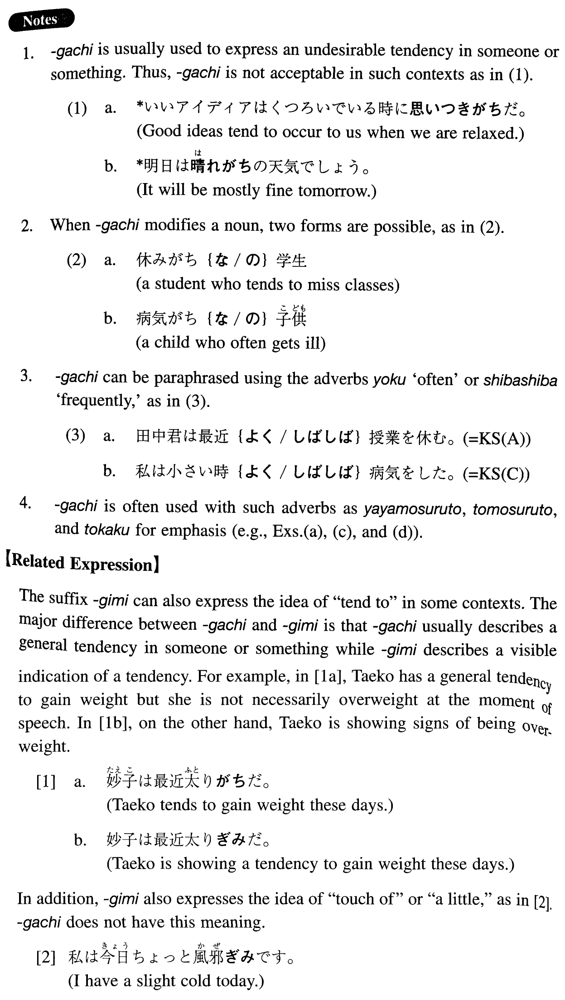

- (ksa).
- 田中君は最近授業を休みがちだ。
- Tanaka tends to miss classes these days.
- (ksb).
- それは日本に短期間滞在した外国人にありがちな誤解だ。
- That's the kind of misunderstanding which foreigners who stay in Japan for a short period of time are subject to.
- (ksc).
- 私は小さい時病気がちでした。
- I was often ill when I was very young.
- (ksd).
- この辺りは昼間留守がちの家が多い。
- Around here many people are often away from their houses during the day. (literally: Around here there are many houses which residents are often away from during the day.)
- (a).
- 夏はややもすると塩分が不足しがちだ。
- Our bodies are apt to lack salt in the summer.
- (b).
- この時計は最近遅れがちだ。
- This watch tends to lose time these days.
- (c).
- 人はともすると自分の都合いいように物事を考えがちだ。
- People tend to think (about things) in a way that suits themselves.
- (d).
- 若いうちはとかく物事一途に考えがちだ。
- Young people tend to think (about things) too seriously and narrow-mindedly.
- (e).
- 私は最近週末もうちを空けがちです。
- These days I seldom stay home even on weekends.
- (f).
- これはアメリカ人の学生が犯しがちな間違いだ。
- This is the kind of mistake which American students are apt to make.
- (g).
- 明日は曇りがちの天気でしょう。
- It will be mostly cloudy tomorrow.
- (h).
- 私のクラスには病気がちの学生が何人かいる。
- There are some students in my class who often get ill.
- (i).
- 彼女は遠慮がちに話した。
- She talked hesitantly (literally: with a tendency to hesitate).
